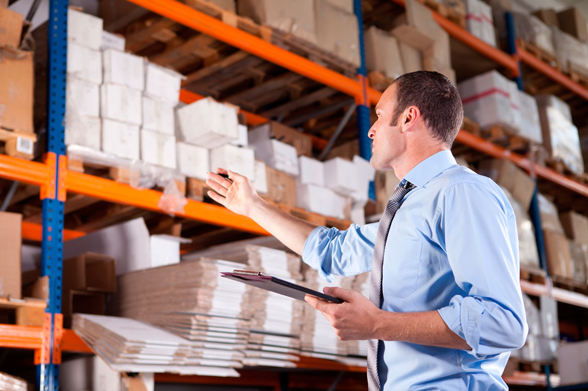
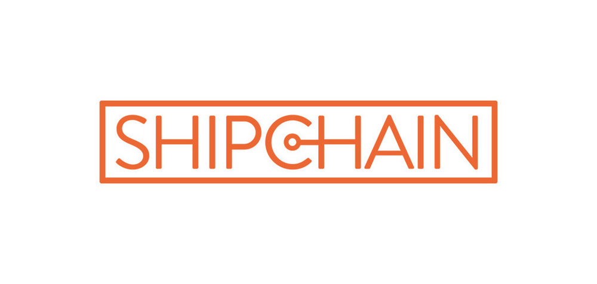

Введение
Логистика — одна из наименее эффективных отраслей в мировой экономике. В этом бизнесе, объем которого оценивают в 2 трлн долларов, много контрагентов, сложные и очень длинные цепочки поставок, громоздкий документооборот и большие проблемы с человеческим фактором. Блокчейн поможет упростить всю эту логистическую систему, что, по оценкам DHL, увеличит объем международной торговли на 15%, а показатель общемирового ВВП — на 5%.
Инвентаризация и отслеживание грузов
Международная логистика, на которую приходится 90% мировой торговли, дискретна (раздельная, прерывистая) и использует все виды транспорта: железнодорожный, автомобильный, воздушный и морской. При этом каждый участник цепочки поставок использует собственную локальную систему учета, например, CRM, BPM, EDM, ERP или другую. Коммуникация между этими системами обычно осуществляется на аналоговом (то есть традиционном) методе, связанном с бумажными документами: курьеры, почта, факсимиле, личные встречи.
Такой подход создает массу проблем:
- Значительная часть грузов, контейнеров и транспортных средств теряются или не используются из-за того, что они находятся «вне поле зрения» систем учета.
- Когда Walmart внедрял блокчейн в свою логистику, там провели контроль отслеживаемости манго от полки в магазине до фермы, на которой этот плод вырос. На это ушло 6 дней 18 часов и 26 минут (с блокчейном — 2 секунды).
- Устранение неточностей в учете требует много времени и денег.
Решить эти проблемы при традиционном подходе нельзя, так как сложные взаимодействия и бумажный документооборот необходимы для подтверждения истинности информации в системах учета и на юридическом уровне.
Блокчейн технологии могут быть использованы для создания единой системы цифрового документооборота в облаке, которая позволит участникам цепочек поставок в режиме реального времени отслеживать местоположение транспортных средств, грузов и своей продукции даже на микроуровнях.
Так, Walmart внедрил блокчейн технологии для поставок манго, свинины и зелени. В перспективе крупнейший сетевой ритейлер в Северной Америке планирует перевести все цепочки поставок пищевых продуктов на блокчейн Food Trust, разработанный IBM.
Unilever использует блокчейн Provenance для управления цепочками поставок чая. В проекте участвует более 10000 фермеров, множество банков, ритейлеров и транспортных компаний. Это не единственный блокчейн-проект Unilever.
Nestle, как и Walmart, использует блокчейн Food Trust от IBM для управления цепочками поставок пищевых ингредиентов, например картофельного пюре, молока и пальмового масла. Таким образом Nestle хочет показать покупателям, из чего сделаны их продукты.
Проверка подлинности и качества
По данным Organisation for Economic Co-operation and Development, в 2018 году мировой рынок контрафактной продукции достиг 450 миллиардов долларов, что больше ВВП таких стран, как Австрия или Израиль. Другие исследования показывают ежегодную потерю 1,6 миллиарда тонн продовольствия (на сумму около 1,2 триллиона долларов), 40% из которых — порча во время транспортировки. При этом, по оценкам CDC, значительная часть этой порчи попадает на стол потребителя, что лишь в США приводит к 130 тысячам случаев госпитализации и 3 тысячам смертельных исходов.
Что касается проблемы с контрафактной продукцией, то технологии блокчейна позволяют отслеживать происхождение товаров от прилавка в магазине до конкретного изготовителя: завода, фермы, предприятия, человека. И эти данные обладают большой степенью истинности, поскольку каждая партия товара (или каждый отдельный товар, если это что-то крупное и/или дорогое) оснащается RFID-меткой, которая постоянно отслеживает местоположение товара и взаимодействия между участниками цепочки поставок.
Помимо этого, RFID-датчики также могут измерять скорость, температуру, влажность и другие эмпирические показатели. Таким образом можно обнаружить нарушение условий транспортировки и выявить порчу продуктов питания, а также отследить процесс или участника, который за это ответственен. Кроме того, если какой-то продукт заражен, например, бактерией E.coli, то система на базе блокчейна может за считанные секунды выявить источник заражения и отследить все зараженные партии товара.
Так, Everledger использует блокчейн для алмазной промышленности. Реестр хранит данные о происхождении драгоценного камня, цвете, прозрачности, огранке, весе в каратах, номере сертификата и другие сведения.
Provenance создала проект по типу «Software as a Service», который собирает и проверяет истории происхождения товаров. Его используют Martine Jarlgaard, The Grass Roots Farmers Cooperative, ассоциация Organic, Pole and Line, Co-op и многие другие организации и производители товаров по всему миру.
MediLedger использует блокчейн для управления цепочками поставок медицинских препаратов по стандартам EPCIS. К 2023 году на этот стандарт обязаны перейти все американские фармацевтические компании.
SkyCell разработала грузовые контейнеры для перевозки медицинских грузов, требующих строгого соблюдения температурных режимов. Внутри контейнера IoT-датчики, подключенные к блокчейну в облаке.
Улучшение фрахта и доставки
В типичном сценарии доставки участвуют около 30 сторон: грузоотправители и грузополучатели, 3PL, перевозчики, государственные службы, банки, страховщики и прочие. При этом во время доставки лишь одной партии товара они обмениваются более 200 бумажными сообщениями: POD (подтверждение доставки), счета-фактуры, BOL (коносаменты). Стоимость обслуживания этой бумажной работы составляет 300 долларов или 10-15% от стоимости транспортировки.
По оценкам IBM, внедрение блокчейна может сэкономить логистической отрасли 38 миллиардов долларов в год. Это станет возможным благодаря смарт-контрактам, которые автоматизируют большую часть документооборота и бизнес-процессов. Помимо этого, распределительный реестр уменьшит количество ошибок, сократит сроки доставки и позволит обнаруживать мошенничество.

Так, Maersk совместно с IBM запустили логистическую систему TradeLens на базе блокчейна Hyperledger Fabric (создан Linux Foundation) для отслеживания судоходных грузовых перевозок и обмена таможенной и финансовой информацией между участниками цепочек поставок. На середину 2019 года на долю TradeLens приходилось около 30% мирового рынка судоходных грузоперевозок.
В Сингапуре была разработана BaaS-платформа VeChain для управления логистикой и цепочками поставок. Ее используют BMW, Renault, DNV-GL, H&M Group и другие бренды.
Выставление счетов и оплата
Как было отмечено выше, отправка груза из одной страны в другую создает цепочку поставок, в которой участвуют около 30 организаций, взаимодействующих между собой более 200 раз. Значительная часть этих взаимодействий — выставление счетов и их оплата. При традиционном подходе эти финансовые операции сложны, требуют много времени и бюрократических усилий, что создает условия для манипуляций, мошенничества и генерирует массу ошибок.
Блокчейн позволяет автоматизировать процесс выставления счетов и их оплату, привязав эти расчеты к совершению определенного действия, к примеру, внесения записи о завершении отгрузки товара или прохождения судна, контейнера и/или груза через границу страны или порта. За отслеживание действия отвечают IoT-датчики, за автоматизацию процессов — смарт-контракты.
Таким образом, блокчейн-решение:
- позволит обеспечить точность и соблюдение сроков проведения финансовых расчетов;
- уменьшит потребность в бумажном обороте и посредниках, которые нужны для гарантий честности и соблюдения сделок, что сильно сократит издержки;
- поможет предупреждать мошенничество или оперативно его выявлять;
- сократит генерацию ошибок (например, неправильное название компании или номер счета) до очень низкого уровня;
- ускорит все процессы.
Финансовые расчеты между участниками логистических процессов можно проводить в фиатных и/или криптовалютных деньгах. Последний вариант более эффективен, так как он позволяет сократить издержки при трансвалютных и международных расчетах.
Так, Tallysticks создала блокчейн-платформу, которая может обрабатывать счета и платежи для логистических и других предприятий в режиме реального времени, что потенциально позволяет ей стать базовой платформой для индустрии факторинга счетов с оборотом более 1 триллиона долларов.
Blockshipping создает глобальную контейнерную платформу для управления операционными платежами между участниками цепочек поставок, а также отслеживания контейнеров в режиме реального времени.
Trade (совместный проект HSBC, Deutsche Bank, Nordea, KBC, Natixis, Rabobank, UniCredit, Santander и Societe Generale) наладила партнерские отношения с TradeLens и TradeShift для цифровизации документооборота судоходных грузоперевозок и предложения комплексных услуг для участников глобальных торговых процессов.
Visa также увидела в блокчейне большой потенциал и запустила свой платежный сервис B2B Connect. С помощью этого решения банки и другие организации смогут осуществлять цифровую идентификацию контрагентов и финансовые операции в течение секунд, а не 2−5 дней.
Запуск фрахтового рынка
В текущем состоянии фрахтовый рынок неэффективен и непонятен. Здесь нет четких стандартов и правил, которые бы урегулировали вопросы ответственности сторон за соблюдение сделок и явное или неявное мошенничество. Кроме того, этот рынок непрозрачен, что довольно часто приводит к непрогнозируемым изменениям стоимости фрахта, несмотря на отсутствие существенных изменений в спросе и предложении, как, к примеру, в начале 2019 года, когда рынок впал в шоковое состояние из-за стремительного падения ставок балкерного тоннажа.
Технология блокчейна и смарт-контракты могут быть использованы для создания справедливой торговой площадки, где компании смогут нанять грузоперевозчиков в кратчайшие сроки на понятных и прозрачных условиях. При этом, поскольку все условия контрактов будут заранее прописаны в смарт-контрактах, возрастет уровень ответственности компаний, так так она будет наступать сразу же в автоматическом порядке, а не после долгих переговоров и/или решения арбитражного суда.
Так, ShipChain работает над улучшением логистики с помощью технологий блокчейна. Система использует смарт-контракты с открытым исходным кодом, которые легко интегрируются практически во все существующие логистические решения на основе блокчейна. Эти контракты созданы для сопровождения логистических операций и направлены на создание децентрализованного фрахтового рынка, а также отслеживание ошибок и предотвращение краж. ShipChain входит в альянс BiTA (Blockchain in Transport Alliance), через который приходит более 80% всех мировых перевозок. 
Улучшение прозрачности
Большой проблемой цепочек поставок является низкий уровень достоверности проверяемой информации, что является прямым следствием отсутствия прозрачности в отрасли. К примеру, из-за отсутствия прозрачности в формировании стоимости перевозки (закупки, транспортировки, хранения) многие компании переплачивают за доставку своего товара к потребителю, а из-за отсутствия возможности у грузоотправителя контролировать процесс доставки, на рынке процветают «серые» схемы, контрабанда и контрафакт.
Если все данные будут храниться в блокчейне, каждый участник цепочки поставок сможет в любое время проверить информацию по каждому судну, контейнеру и/или грузу, что уменьшает вероятность расхождения в документации разных сторон.
Что даст повышение прозрачности в логистике:
- позволит сторонам видеть свидетельства прошлых результатов контрагента, включая задержки с доставкой, оплатой и тому подобное;
- уменьшит вероятность расхождения в документации, например, когда перевозчик и грузополучатель неправильно трактуют время доставки;
- даст возможность контролировать процесс доставки на микроуровне, что снизит уровень мошенничества, неточностей и будет противодействовать контрабанде и «серым» схемам.
Так, Provenance создали BaaS-решение, которое увеличивает прозрачность цепочек доставки, дает доступ к важной информации всем участникам (включая конечных потребителей) и позволит обеспечить справедливую компенсацию участникам логистического процесса в случае нарушения их прав или нарушения контрактов.
Разрешение споров
Каждый день из-за споров о платежах в логистической отрасли «замораживаются» операции на общую сумму более 140 миллиардов долларов. К примеру, такое происходит, когда грузоотправитель сообщает транспортной компании, что та прислала неверный счет или когда стороны забыли указать, кто платит те или иные сборы. Подобные расхождения связывают денежные потоки, увеличивают издержки компаний и уменьшают их ликвидность. Для их решения обычно привлекают независимых аудиторов, которые выясняют все обстоятельства и дают свои рекомендации, что обычно затягивает процесс до 42 дней.
Если же все условия и действия записаны на блокчейне, то это устраняет большинство проблем при возникновении спорных ситуаций. Участники конфликта могут проверить нужные данные в блокчейне и в соответствии с контрактом (или Пользовательским соглашением) решить, кто прав и что делать.
Так, FedEx, еще один участник BiTA, запустила пилотное решение для безопасного хранения записей о доставке грузов через их сервис, чтобы использовать эти данные как источник истины при возникновении спорных ситуаций.